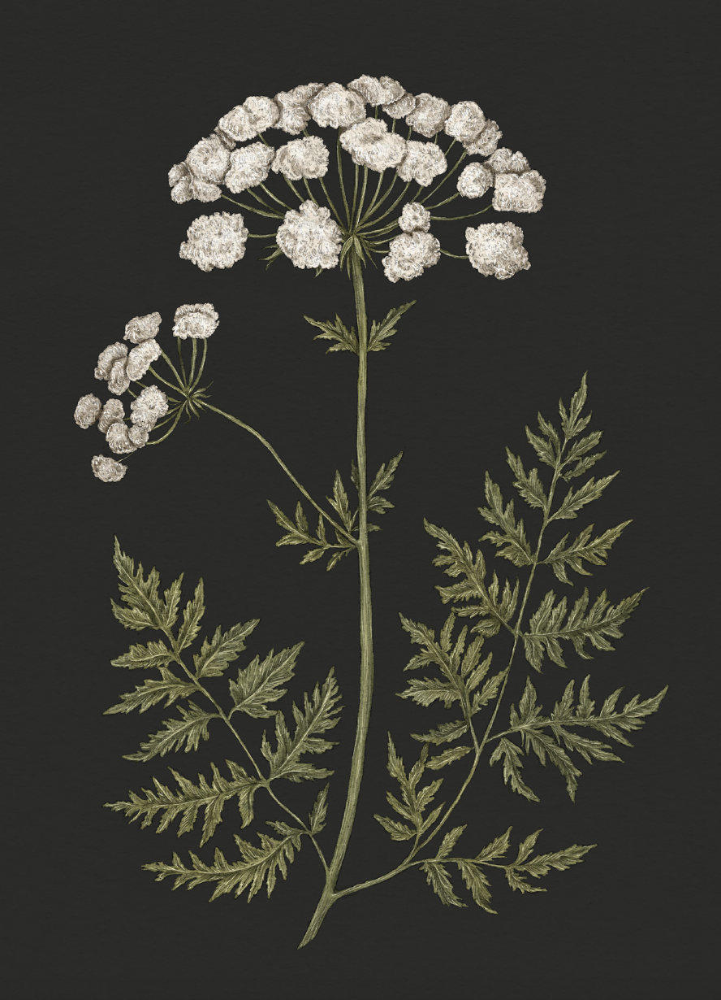

Plate HEMLOCK
The Language of Flowers
Hemlock Study

Hemlock
Conium maculatum
Definition: A poisonous plant associated in floriography with death.
Meaning
Death
Origin
Hemlock is a poisonous plant that causes paralysis and death. Perhaps the most infamous poisoning by
hemlock was that of Socrates, who drank a tea made from the plant after being sentenced to death for
his moral philosophy.
Pair With
- Chrysanthemum for condolences upon the loss of a loved one
- Nettle for a loved one who has been taken away too soon